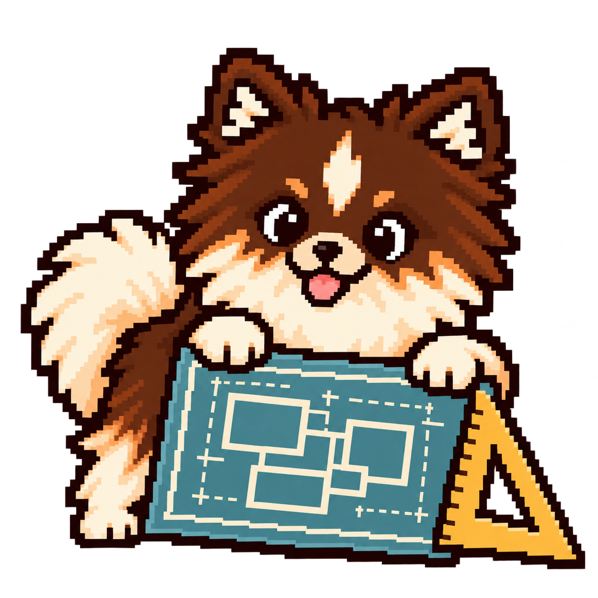
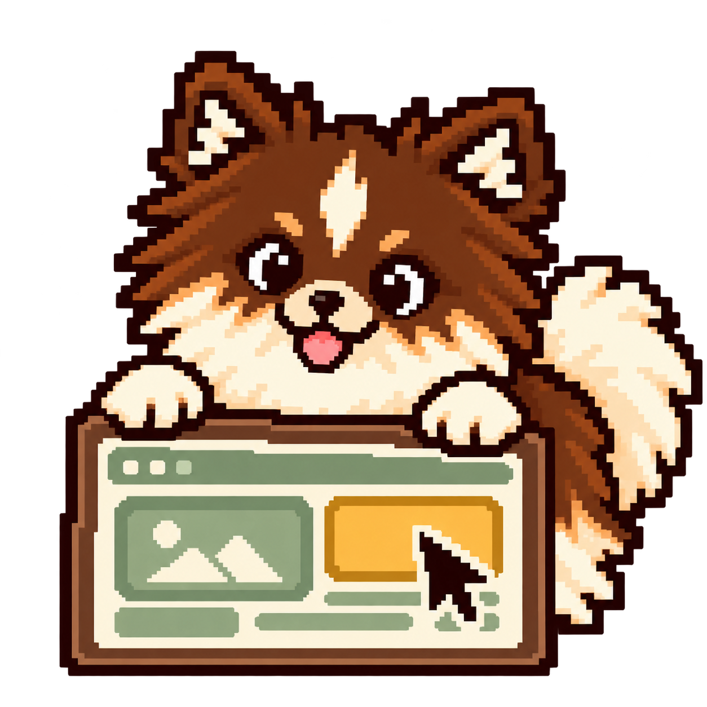

Develop
Route the outcome and coordinate the right skills.
In chat, type "$develop:develop Why did this CI job fail?"
Develop sends the CI question to Iterate. Iterate examines the failed job log and tells the user what caused the failure or what evidence is missing. Users can also invoke a skill directly. Develop routes other outcomes to Upgrade, Kaizen, Clean or Adversarial loop. Upgrade Codex is available only by explicit invocation. Upgrade, Kaizen and Upgrade Codex may return findings; they hand changes to Iterate only when implementation is authorized. Iterate performs the requested work and can loop through validation, authorized delivery, monitoring and authorized repair. Clean expands to Deep clean only for explicitly widened scope. Adversarial loop reviews applicable checkpoints and returns findings to the owner within a bounded review budget. An audit-only Upgrade Codex review is opt-in. Iterate may use compatible installed Superpowers guidance for planning, debugging and testing, then resumes with its existing scope and gates. Engineering Design must fire for engineering work and Interface Design must fire for interface work, with or without human input. Default to requesting human input and review. Only explicit user waiver within their authority bypasses planning or review. Explicit delegation to Adversarial loop permits unattended planning review with assumptions and unresolved decisions recorded. Unanswered approval is not permission; required human, legal and security approvals and execution scope remain binding.
Route by outcome · follow Iterate for this question
Explicit invocation only
Audit review is opt-in
Planning gate · must fire for engineering work
Explicit wider scope
Planning gate · must fire for interface work
Return findings · implement only when authorized
Required for applicable work
Default
Await response
Explicit delegation
Unattended review
Record assumptions + open decisions
Explicit user waiver
Within existing authority
Required approvals still apply · silence is not approval
Shared Codex context guard · trusted local orchestration + execution
Bound reads · opt-in save → verify → receipt; otherwise passthrough.
Route the outcome and coordinate the right skills.
Build, refactor, review, debug and deliver changes.

Mandatory engineering planning: architecture, boundaries and tradeoffs.

Mandatory for interface work: layout, interaction and accessibility planning.
Assess dependencies and plan runtime migrations.
Learn from selected sessions and recommend improvements.
Clean verified disposable resources from this thread.
Inspect or clean an explicitly expanded filesystem scope.
Challenge intent and evidence with independent reviewers.
Audit Codex compatibility when explicitly invoked.